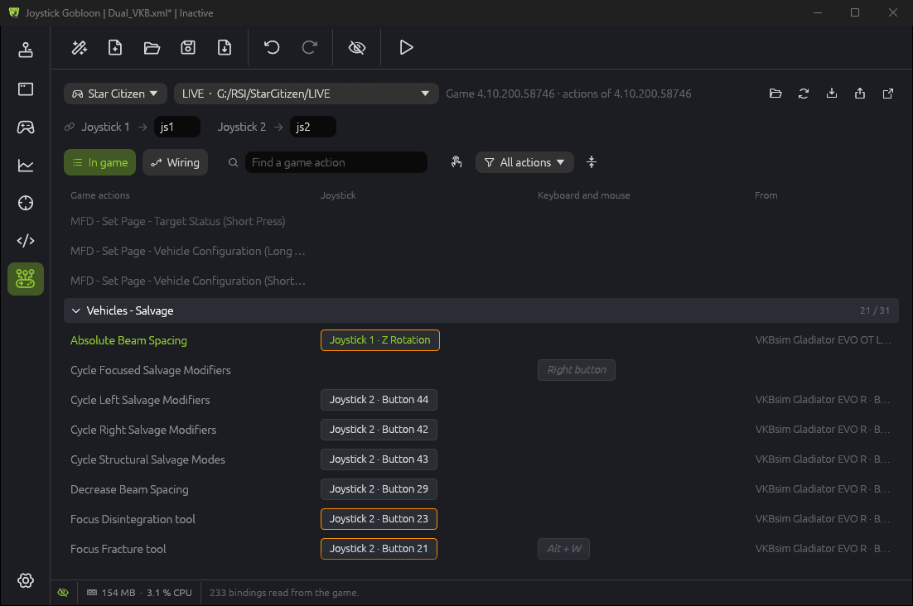
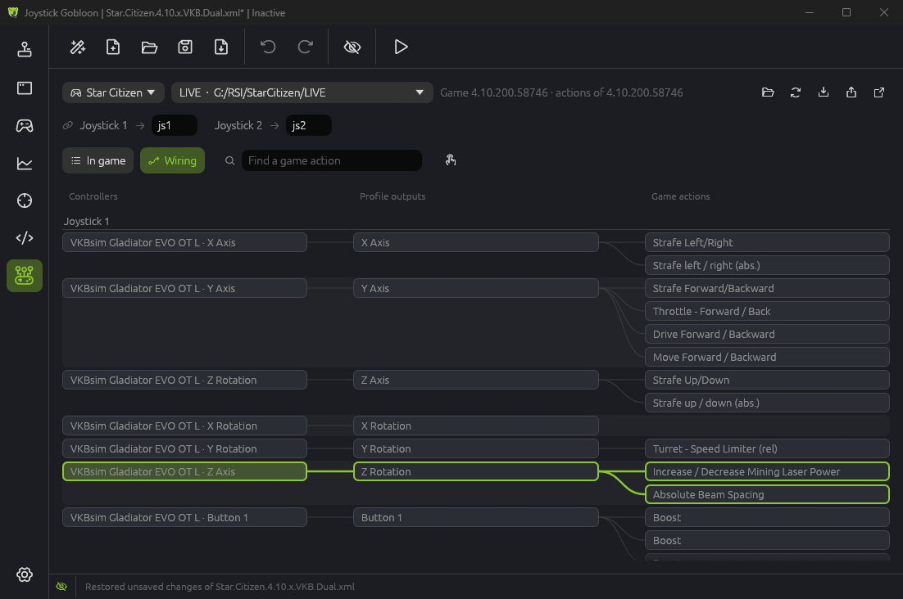
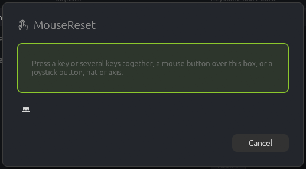
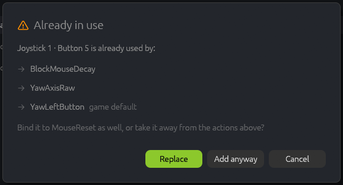

A profile turns your sticks into virtual joystick buttons and axes; the game still has to be told which of them lowers the gear. The Game bindings page does that part too: it reads the game's own bindings, shows the whole path from your stick to the game's action, and writes the bindings into the game's files.
The idea
How it works
Every binding has two halves. Your profile maps a stick button to a virtual output, say button 5 of virtual joystick 1; the game maps that output to one of its actions. Usually the second half is done in the game's own menu, one action at a time, and starts over when you change the profile.
The Game bindings page in the left rail keeps both halves in one place. The profile remembers which game action each virtual output drives, and an export writes those links into the game's files. Change the profile, export again, and the game follows.

Supported games
Star Citizen 4.10 and newer, LIVE, PTU and the other channels: joystick, keyboard and mouse bindings.
Microsoft Flight Simulator 2020 and 2024: joystick bindings of the sim's control profiles.
IL-2 Sturmovik: Great Battles: joystick, keyboard and mouse bindings, axes from two buttons included.
Elite Dangerous (4.x, Odyssey and Horizons): joystick, keyboard and mouse bindings of your own preset.
X4: Foundations: joystick and keyboard bindings.
DCS World: joystick and keyboard bindings of every aircraft.
Each game is a plugin in the export folder next to the program, with the game's list of actions for each version it knows. Microsoft Flight Simulator, IL-2, Elite Dangerous, X4 and DCS World were made from the games' file formats and bindings files people have shared, not tested in the games themselves yet: if something comes out wrong, a bug report with the game's file helps a lot.
Your files are kept
Before anything is written, the export lists every change. Each file it replaces is kept next to it as a copy named like actionmaps.xml.gobak-20261118-093000, so a change you do not like is undone by renaming the copy back. Only the bindings of the actions you changed are touched; the rest of the game's file stays as it was.
Step by step
1. Find the game
Open Game bindings in the left rail and choose the game at the top left. The program looks for it in the usual places; when it finds more than one copy (Star Citizen's LIVE and PTU, a Steam and a Microsoft Store sim), the second list picks one. Next to it are the game's version and the version of its list of actions.
Installed somewhere else? The folder button at the top right points the program at the game's folder; it is remembered. The arrows look again, for example after an update of the game.
2. Joystick numbers
A game numbers the joysticks it sees in its own way, so the line below the game says which of its numbers each virtual joystick has: Joystick 1 → js1. It is filled in from the game's files; change it when the game lists your virtual joysticks in another order, for example because a physical stick is not hidden.
3. Read the game's bindings
When the game already has bindings for your virtual joysticks, the page offers to Take them into the profile; the download button at the top right does the same at any time. From then on the profile knows them, and the next export keeps them.
4. Bind
Find the game's action in the In game list (the search box helps), click the plus that shows when you point at its row, and press the control that should drive it: a stick button, a hat, a moved axis, a key or a key combination, or a mouse button. A stick button is followed through your profile to the virtual output it writes, and that output is bound.
A binding that is in the profile but not in the game yet is marked as new; one the game has but the profile no longer does is marked for removal, and a click keeps it after all.
5. Export
Click the export button at the top right. The dialog lists what is added, changed and removed and the files it will write, with the game's own options (for Star Citizen, the layout file and its name). Write saves them, and the status bar says how many files were written. Then load the bindings in the game as its section below says.
The page
In game
Every action of the game, in the game's own groups (fold them with the arrows, or all at once with the button at the end of the toolbar). Each row shows the joystick controls and the keys or mouse buttons that drive the action, and under From the stick button or key in your profile that sets it off. Actions bound nowhere are grayed. Click a binding to change or clear it.
The filter narrows the list to the actions Bound in the profile, those Not exported yet, or Shared controls: one control driving several actions, which games often allow, but which is easy to do by mistake. A shared binding has an orange outline.
Wiring
The same links as a schematic: your controllers on the left, the profile's virtual outputs in the middle, the game's actions on the right, one lane for each output. While the profile is active, a pressed button or a moved axis lights its whole lane, so you can see which game action it would set off without starting the game. Click an output, then a game action, to link them; the search shows only the outputs with matching actions.

Device
A picture of your own stick or throttle with a card on each control: its hats, buttons, trigger, levers and axes, and the game actions each of them drives. Drag an action from the list on the left onto a control to bind it; it goes the same way as pressing the control, with the same questions when the control is taken or not mapped yet. Right-click a control to unbind an action from it. A control lights up while you press it.
The list on the left has the page's search, a category picker, and All, Unbound or Bound (to a joystick control).
Which button is which can differ from stick to stick (VKB and Virpil sticks are set up in their own configurators). The first time, click Teach every control and press each control when asked; Skip leaves one out. A single control can be taught again from its right-click menu. What you teach is kept for that device in the program's settings folder.
The hand button in the toolbar waits for a press. With an action selected in the list, the control you press is bound to it; with none, the list shows only the actions that control drives, which answers "what does this button do in the game?".

When the control already drives other actions, the program lists them, the game's defaults included: Replace takes it away from them, Add anyway keeps both. A stick button that writes several outputs asks which one the game should listen to. A stick button the profile does not map yet can be mapped to a free output of a virtual joystick and bound in one go.

Keyboard and mouse
Keys and mouse buttons stay as the game has them, defaults included, until you change an action's keys here. From then on the profile keeps that action's keys, and the export writes them. The round arrow next to an action's keys (Keyboard and mouse as the game has them) gives them back to the game. Microsoft Flight Simulator keeps its keyboard bindings in files of another kind, so only its joystick bindings are written.
Game versions
Games add, rename and drop actions with their updates. The plugin picks the list of actions of the version you have; for a newer game the newest list is used and a note says that the latest actions are missing. Renamed actions are carried over by themselves, and actions the game no longer has are marked Not in this version of the game and left out of the export.
Per game
Star Citizen
The bindings are read from the game's actionmaps.xml (in user\client\0\Profiles\default of the channel). The export can update that file, write a layout file, or both:
Layout file: controls\mappings\layout_<name>_exported.xml, named after the profile unless you name it. Load it in the game under Options, Keybindings, Control Profiles. The game never changes it.
actionmaps.xml: the bindings the game uses at its next start. Close the game first: it writes this file when it quits and would put its old bindings back.
Unbind the game's own joystick bindings on js1 (on by default): the game binds many actions of joystick 1 by default; with this option, an action your profile binds elsewhere loses that default, so one button does not set off two things.
Microsoft Flight Simulator
The sim keeps a control profile for each device (in 2024 also one for each aircraft kind). Each virtual joystick's profiles are read; set the sim's profile name in the export dialog to write just that one.
Steam: the profiles are updated in place. Close the sim first, and start it again for the change to show.
Microsoft Store 2024: the sim keeps its profiles in cloud saves that other programs cannot change, so the export writes files to import into Documents\Joystick Gobloon\Flight Simulator 2024. In the sim: Controls, the virtual joystick, Import.
Microsoft Store 2020: bindings can be read, but the sim offers no way to bring them back in.
IL-2 Sturmovik: Great Battles
The bindings live in data\input\global.actions of the game's folder, and the game's joystick numbers in devices.txt next to it (read, never written). The game turns them into its own key map at every start, so exporting while it is closed is enough. An axis made of two buttons, such as trim, is bound as two actions marked (+) and (−).
Elite Dangerous
The game keeps your bindings in a preset of your own, %LOCALAPPDATA%\Frontier Developments\Elite Dangerous\Options\Bindings\Custom.4.2.binds, and writes it only when you save in Options › Controls. If the game still uses one of its built-in presets for ship controls, change one control there and save once: then there is a preset of your own to fill. Each action has two places for a button (or one for an axis): the export puts the profile's input into the place it already has, else into a free one, and keeps the game's other inputs. Half axes used as buttons and buttons held together with another stick's button stay as they are.
The game names a controller by its USB ids, and every vJoy device has the same ones, so it tells them apart by number: 1234BEAD is the first vJoy device, 1234BEAD:1 the second and so on. The program fills them in that order; if the game numbers them the other way round, type the right ones above the table. Export while the game is closed, or at least not in Options › Controls.
X4: Foundations
The bindings live in Documents\Egosoft\X4\<your account number>\inputmap.xml. X4 knows up to eight joysticks by slot: pick the virtual joysticks once in the game under Settings › Controls › Manage controllers/joysticks, and the program finds their slots in config.xml next to it. Otherwise type them above the table (joy1 to joy8). The game reads one hat per joystick and 64 buttons; keys can be held together with Shift and Ctrl. Axis inversion and the dead zone are the game's settings and stay as they are. X4 writes these files when you leave it, so export while it is not running.
DCS World
DCS keeps the bindings of each aircraft apart, so each aircraft you have flown is an install of its own in the list, named after its folder in Saved Games\DCS\Config\Input (the open beta's are under DCS.openbeta). There is one file for each device, named after the device and its id, holding only what differs from the aircraft's defaults; a virtual joystick without one gets its own file at the first export. The program finds the virtual joysticks by that id; if a file belongs to another device, type the right id ({...}) above the table.
The aircraft's list of actions lives inside the game, so the program reads it from the files the game writes with Make HTML on its Controls screen (Saved Games\DCS\InputLayoutsTxt). Open Controls in the game once for each aircraft and press Make HTML: without these files only the actions you already changed in the game are listed. Axis curves and dead zones you set in the game stay; inverting an axis in the profile sets the game's invert. Export while the game is closed or at least not on the Controls screen, which writes these files when you leave it.
On Linux
Games run under Proton or Wine keep their files in a Windows folder tree of their own. The program looks in the Steam prefixes, ~/Games and ~/.wine; for a game installed elsewhere (Lutris, a second Steam library), point it at the game's folder with the folder button. The virtual joysticks are the ones the game sees under Proton.